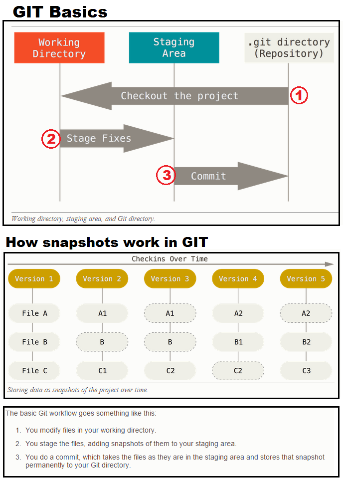
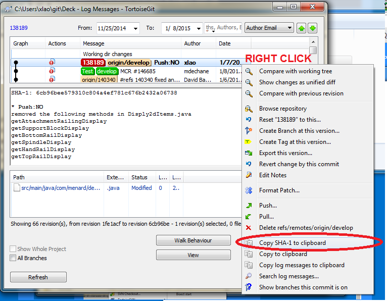

GIT
Programmers working together need a way to work on same files. Sub Version Control (SVC) is a method that allows programmers to do this. GIT is basically a SVC tool. In short it allows a programmer to checkout a file, modify it, and commit the file back to the repository. As of November 2014, GIT replaces the old Tortoise SVN we used to use for file versioning. One of the unique features of GIT is being able to checkout, create, and merge branches all through a simple git command line.
Release Cycle Flow
- Master or Tag are created into a develop branch at the very initial state of the project
- feature branches created off of develop branch
- features branches completed are merged into develop, never master
- once develop acquires enough features, fork a release branch off of develop, and no new features can be added at this point
- once release candidate is ready to ship, tag release and merge release into master and develop
- only hotfix or maintenance branches can branch off of master, and when complete, merged into master and develop (or current RC) and tagged with updated version number
Installing GIT
Note that for windows, there is GIT for windows and GIT itself. If you install GITHub for windows, it'll come with both GIT and the gui. anycase, there are multiple ways to install GIT. Only after installing, are you able to use git commands. git installation
Git Commands
Checking out branches and merging it with another and pushing it back to the git repo
- git checkout master
- git merge release-0.1
- After you commit > git push
= git push origin develop - git checkout develop
- git merge release-0.1
- git push
- git branch -d release-0.1
- git clone https://github.com/blackstrings/learnCSharp
EGit
In eclipse you can connect to git using EGit. It is a gui tool found under the windows tab
Creating and Managing a Local Git Repo In Eclipse
Flow Process
Link to image source
You can't really undo commits, GIT only adds changes for protection reasons, but there are some ways to go around it. Check out this link
Re-edit commit comments
In eclipse, check the history, right click on the commit > modify > reword, if the commit has already been push to stash, the remote stash will be updated too.
Creating a Branch
- Login git.menards.net
- Go to app or package you want to work on
- Create Branch > Branch Type: Feature > Branch from: Develop
- Branch name: feature/ [MCR #]
- Create Branch
Get a Landscape feature branch to put into your Eclipse workspace
- git.menards.net > login
- Projects > Standalone Apps
- Landscaping
- Develop > drop down arrow > look for your feature branch
- Select it > clone > copy (important)
- Go to eclipse
- Window > Open Perspective > Git
- Clone a Git Repository, window pops up and all things should be filled in
- Login > Next
- all feature branches show up > select all > next
- Leave Directory default > change Initial branch to your feature > Finish
- Right click on (say Deck) in the git repo > import as general projects > named app accordingly (ex: DeckEstimator)
- Right click on main java project > convert to maven
Working on continuous Develope branches in eclipse with Git
- copy develope src from git stash site
- paste into eclipse git repo window
- check out the dev branch
- Import the the dev branch > right click on [App] in Git Repo > Import Projects > rename correctly > import as general
- Now the app should be in your package explorer
- To begin making changes > Git Repo > Local > right click on develop branch > create branch
- Change Branch name to your MCR# > check Configure upstream > check rebase commits > create
- Check out this new branch, now you can make changes to it
- Always commit locally only
- When ready to push branch > fetch from upstream first > synchronize if needed > right click push branch
- leave configure upstream check > check rebase commits of local > next
- the branch should push without problem, if you see non-fastforward issue, fetch and synchronize to see if another version was commited before yours
- try pushing branch again
- To do code review, open codeCollborator client > select your app > add commit
- only insert your branch id, no need to compare to another id
- to get the id, open your .git explorer > right click on say 'Deck' app > tortioseGit > Fetch
- Fetch will synchronize or update the app

- 

- finish up code review in browser
Committing new code changes for code review not in continuous dev
- Commit and push your new code changes as usual
- code collaborator client > select your app you want to commit to
- Add commits... > add to existing review > select the existing review > add only the new commit id (which can be grabbed from the online stash > next
Commiting reset branch when there are conflicts
- Use the force commit to overcome this
Conflicts with checkingout a new branch
When you have an old develop branch and other feature branches and you pull in a new branch that is branched off a new developed branch. You will come across this issue. To fix, use the explore window to move the conflicting file out of the workspace directory, checkout the project in eclipse, then put the conflicting file back. You should only have to do this once every time the developer branch is updated.